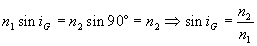
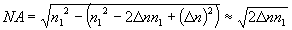
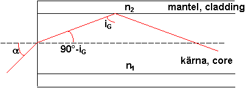
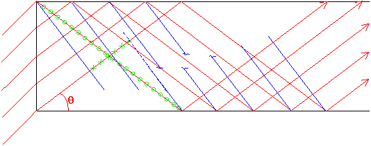

En optisk fiber är en komponent avsedd att föra över stora mängder information, på kort tid. Överföringen använder laserljus som leds i ett material med högra brytningsindex än sin omgivning. Ljusledningen bygger på totalreflektion dvs att när ljus ska brytas genom en yta, och kommer från ett medium med högre brytningsindex än det är på väg mot inte ger någon bruten stråle om infallsvinkeln är tillräckligt stor. Jfr fig. Den röda strålen har så stor infallsvinkel att brytningsvinkeln blir i det närmast 90°. Större än 90° kan den ju inte gärna bli så för större infallsvinklar (grönt i fig) kommer allt ljus att reflekteras. Idén är nu att göra en tråd av material med högre index (kärna=core) omgiven av material med något lägre (mantel=cladding). Metoden att leda ljus kommer nu att fungera i kärnan även om man böjer den måttligt.
Det finns flera fördelar med informationsöveföring i fiber jämfört med olika elektriska alternativ (dubbelledare och koaxialkabel exvis):
- Man kan skicka fler informationsenheter (bits tex) per sekund i en fiber eftersom ljuset som våg har så mycket högre frekvens än motsvarande för elektriska signaler. (Hundratals THZ jämfört med enstaka GHz). Däremot kommer inte signalen fram snabbare, eftersom information i en vanlig koaxialkabel också färdas med ljusets hastighet.
- Fibern läcker inte ut någon signal som kan avlyssnas på något vettigt sätt, vilket elektriska ledningar gör. Omvänt så är de heller inte särdeles känsliga för störningar av olika slag utifrån. EMP och kraftiga magnetfält från transformatorer lämnar i princip den optiska signalen oberörd.
- Fibern är lättare än de flesta andra material, vilket kan vara bra för vissa tillämpningar
- Råmaterialet till optisk fiber är krossad kvarts (dvs sjösand) vilket inte är någon bristavara och därför billigt.
Fiberoptik nivå 2
För att ljuset ska ledas genom fibern krävs att infallsvinkeln mot gränsytan kärna/mantel hela tiden är större än gränsvinkeln för totalreflektion. Denna ges av att brytningsvinkeln är 90° (större kan den ju inte gärna bli):
För att detta ska ske inuti fibern ställs vissa krav på den vinkel med vilken ljuset leds in i fibern. Se fig. Man får ett största värde på a som svarar på det min sta värdet på iG för att få totalreflektion. Sinus för den vinkeln är såpass viktig att den fått ett eget namn: Numerisk Apertur eller NA:

Om man sätter n2 till n1-Dn, och inser att Dn är litet kan det sista ledet skrivas om till:
 NA visar alltså i vilket vinkelområde strålarna måste ligga för att kunna ledas vidare.
Dett ska nu kombineras med ytterligare ett villkor, som är lite knöligare: Ljusets vågnatur kommer in eftersom fibern är så liten. Vågfronter får inte vara avbrutna (av samma skäl som i kapitlet om diffraktion). Betrakta nu nästa fig. Vi ser där vågor som faller in med en given vinkel. Strålarna är röda och får inuti fibern vinkel q, de vågfronter som hör till strålarna (alltid vinkelräta mot strålarna) är blå.
För att ljus ska kunna ledas i fibern måste vågfronterna före och efter första reflektionen ligga rakt för varandra, dvs inte så som i fig. (Streckad fortsättning på vågfront passar inte in.) Ett villkor för att de ska göra det är att skillnaden mellan de bägge sträckor som är markerade med gröna kryss och gröna ringar ska vara ett helt antal våglängder.
Nu måste vi inse (om vi inte ska behöva göra hela härledningen, vilket är vidrigt) att de vinklar som gör att vägskillnadenb uppfyller villkoret ligger tätare och tätare ju större fiber är. Om fiber är extremt liten finns det kanske inga sådana vinklar alls.
Detta ska vi nu utnyttja för att göra en så kallad singelmodfiber: Först och främst: Vinkeln q=0 är alltid en tillåten väg, eller mod, för ljuset, eftersom några vågfrontsproblem då inte kan uppkomma.

Välj nu diametern på fiberns kärna så liten att den förat vinkel som uppfyller villkoret "grön skillnad" = heltal våglängder, är större än NA. Då innebär det att det bara finns en väg ljuset kan gå i fibern, vilket är en mycket stor fördel, eftersom närvaron av flera tillåtna vägar leder till flera tänkbara gångtider för en puls genom fibern, med därtill hörande pulsutbreddning (dvs -förstöring). Sådana fibrer kommer med det val av material som finns idag att ha kärndiametrar runt 3-8µm. Manteln görs sedan mycket tjockare för att göra fibern mekaniskt stabil.
Singelmodfibrer har idag en dämpning på ca0.1dB/km. Efter 300km (Sthlm-Karlstad) har alltså intensiteten gått ner en faktor 1000! Det motsvarar (som kuriosum) att om havet vore lika genomskinligt som fibern skulle man kunna titta ner genom ytan vid Marianergraven och se botten utan egentlig dämpning.